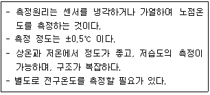
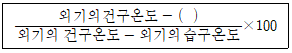
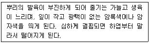
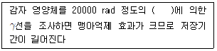

1과목: 원예학개론
1. 여름철 노지에서 프리뮬러(Primula)가 고온피해를 입은 후, 물켜져 죽었다. 다음 설명 중 관계가 없는 것은?
2. 다음 중 콩과(科)에 속하는 작물은?
3. 다음 중 영양번식에 비해 종자번식이 갖는 장점이라고 볼 수 없는 것은?
4. 다음 중 생장조절제 중 GA3의 억제제로 가장 강력한 것은?
5. 감나무(Diospyros kaki)에 대한 설명이 틀린 것은?
6. 숙기조절법으로 온도조절과 화학물질의 이용이 있다. 그 중 포도의 숙기조절에 이용되는 화학물질은?
7. 우리나라 주요 채소의 분류에 대한 설명으로 옳지 않은 것은?
8. 과실구조에 따른 분류중 인과류(pomes, 仁果流)에 해당하지 않는 것은?
9. 수확 후 절화 품질 및 수명을 증진시키기 위해 사용되는 절화보존제의 구성성분으로 알맞지 않은 것은?
10. 과채류 중 손자덩굴에 주로 착과가 되는 것은?
11. 품종을 육성한 사람의 권리가 보호될 수 있도록 제도 및 운영관리를 하는 기관은?
12. 광주성에 의한 식물분류 중 장일식물에 해당하는 것은?
13. 다음 중 pH 4.8~5.4인 산성토양에서 잘 견디고 생육하는 작물은?
14. 꺾꽃이 번식의 장점이 아닌 것은?
15. 수박의 인공수분을 시켜주어도 착과율이 떨어지는 경우가 있는데 그 원인 설명으로 틀린 것은?
16. 토양의 산도반응(pH)에 따라서 꽃 색깔이 변화는 화훼는?
17. 다음 구근류와 관련된 설명 중 옳지 않은 것은?
18. 다음 중 채소를 생태적 특성에 따라 분류한 것은?
19. 다음 개화 및 화아분화와 관련된 설명 중 옳은 것은?
20. 종자휴면의 원인으로 간주할 수 없는 것은?
2과목: 시설원예학
21. 다음 [보기]에서 설명하는 습도계는?

22. 온실을 기본시설과 부대시설로 구분할 때 다음 중 부대시설에 해당되는 것은?
23. 시설의 구조적 안정성 분석 시 응력해석이 필요하다. 설계 시 고려해야 할 응력에 해당하지 않는 것은?
24. 다음은 온실의 기화냉각법에 의한 냉방효율을 계산하는 식이다. ()안에 알맞은 것은?

25. 다음 중 시설재배 면적이 가장 큰 지역은?
26. 토양 공극에서 모세관현상으로 보유되는 수분인 모관수의 pF범위는?
27. 온실 내 토양재배에서 원하는 부위에 소량의 물을 지속적으로 공급하여 토양 유실이 없고, 토양이 굳어지지 않으며 소량의 물을 넓은 면적에 효과적으로 관수할 수 있는 방법은?
28. 양분의 결핍 밑 흡수 불균형으로 나타나는 생리장해 중 잘못 짝지어진 것은?
29. 펠릿(pellet)하우스에 대한 설명으로 가장 적합한 것은?
30. 온실작물의 관수방법 중 수분을 공급하는 원리가 다른 것은?
31. 공정 육묘장에서 플러그묘(Plug seedlings)를 생산하기 위해 자동파종기를 사용하게 되는데 이곳에 이용되는 용기는?
32. 온실 하중(荷重)의 흐름은 어떤 것이 이상적ㆍ합리적인가?
33. 식물의 광합성 효율이 높은 가시광선의 파장색은?
34. 미국 NASA가 중심이 되어 무중력상태에서 식물생장 특성을 연구하고 있다면 어떠한 재배시스템에 대한 연구인가?
35. 다음 설명의 증상은 고추의 어떤 요소 결핍 시 발생되는가?

36. 자동정식기로 재배포장에 정식하려면 어떤 상태의 묘가 가장 적합한가?
37. 플러그 육묘용 상토 자재 중 pH가 가장 높은 것은?
38. 하우스 내 스팬의 길이가 2m인 단순보의 중앙에 집중하중 10kN이 작용할 때, 최대 휨모멘트의 크기는?
39. 온실 내 작물의 엽온, 체내수분, 색, 당도, 광합성, 증산량과 같은 정보를 계측하는 분야의 발전이 기대된다. 이러한 계측분야를 무엇이라 하는가?
40. 40cm의 토층에 포장용수량(용적비)이 27%, 관수 직전 토양의 함수량(용적비)이 23% 일 때 근권 부위를 포장용수량의 상태로 보충할 경우 1회의 실제 관수량(R)은 약 얼마인가? (단, 관수량의 일부가 지하 및 지표에 유실될 것을 고려하여 관수 효율은 90%로 한다.)
3과목: 재배학원론
41. 화성유도 시 저온ㆍ장일이 필요한 식물의 저온이나 장일을 대신하여 사용하는 식물호르몬은?
42. 앞 작물의 그루터기를 그대로 남겨서 풍식과 수식을 경감시키는 농법은?
43. 고무나무와 같은 관상수목을 높은 곳에서 발근시켜 취목하는 영양번식 방법은?
44. 작물의 수해에 대한 설명으로 옳은 것은?
45. 우리나라 원산지인 작물로만 나열된 것은?
46. 다음 중 T/R율에 대한 설명으로 옳은 것은?
47. 녹체춘화형 식물로만 나열된 것은?
48. 노후답의 재배대책으로 가장 거리가 먼 것은?
49. 다음 중 땅속줄기(지하경)로 번식하는 작물은?
50. 벼의 비료 3요소 흡수 비율로 옳은 것은?
51. 다음 중 작물의 주요온도에서 최적온도가 가장 낮은 작물은?
52. 순무의 착색에 관계하는 안토시안의 생성을 가장 조장하는 광파장은?
53. 다음 중 단일식물에 해당하는 것으로만 나열된 것은?
54. 다음 중 침수에 의한 피해가 가장 큰 벼의 생육 단계는?
55. 등고선에 따라 수로를 내고, 임의의 장소로부터 월류하도록 하는 방법은?
56. 다음 중 식물학상 과실로 과실이 나출된 식물은?
57. 광합성에서 C4 작물에 속하지 않는 것은?
58. 뿌림골을 만들고 그곳에 줄지어 종자를 뿌리는 방법은?
59. 식물체의 부위 중 내열성이 가장 약한 곳은?
60. ()에 알맞은 내용은?

4과목: 작물생리학
61. 요수량(water repquirement)에 관한 설명 중 옳지 않은 것은?
62. 다당류가 단당류를 거쳐 피루브산으로 되고 이것이 산화되어 고분자 에너지 화합물인 ATP를 형성하는 대사 작용은?
63. 피토크롬(Phytochrome)에 대한 설명으로 가장 적당한 것은?
64. 식물세포의 엽록체 내 틸라코이드(Thylakoid)의 4가지 중요한 복합체가 아닌 것은?
65. 광으로부터 유기되어 공변세포에서 기공의 개폐현상에 관여하는 이온은?
66. 주로 잎에 집적되어 식물체 내의 이동이 비교적 어렵고, 세포막을 단단하게 하며, 토양미생물의 번식을 촉진 시키는 원소는?
67. 종자가 형성되지 않아도 착과하여 과실이 정상적으로 비대되는 현상을 무엇이라 하는가?
68. Glucose 1분자가 glycolysis 과정에서 분해되면서 생성되는 ATP의 총 수는?
69. 식물의 조직이 저온에서 얼게 되는 성질 즉 내동성(耐凍性)에 관계되는 내적 조건에 해당되지 않는 것은?
70. 잎에 있는 기공의 작용에 관하여 적절하게 표한한 것이 아닌 것은?
71. 작물개화와 관련된 춘화현상은 어떤 환경요인에 의한 현상인가?
72. 다음 색소 중 세포액 속에 물에 녹아 있는 상태로 존재하는 것은?
73. 다음 중 광합성의 명반응과 관계없는 것은?
74. 식물의 토양 양분 흡수에 관계되는 요인이 아닌 것은?
75. 단위결과(單爲結果, parthenocarpy)를 나타내는 가장 정확한 표현은?
76. 콩과작물의 근류에 있는 레그헤모글로빈(leghemoglobin)의 주요 기능은?
77. 식물체내에서 자연 발생하는 식물호르몬 중 시토키닌(cytokinin)의 역할에 해당되지 않는 것은?
78. 침윤종자나 생장 중인 식물에 저온처리를 하여 개화가 유기ㆍ촉진되는 작용에 대한 설명으로 옳은 것은?
79. 과채류에서 착과 과정이 순서대로 옳은 것은?
80. 수분의 삼투퍼텐셜은 용질이 첨가됨에 따라 생기는데 30℃에서 2.0mol 포도당 용액의 삼투퍼텐셜(MPa)은 얼마인가? (단, 소수점 3자리에서 반올림한다.)
5과목: 수경재배학
81. 배양액에 포함된 이온의 농도를 나타내는 단위로 적합하지 않은 것은?
82. 수정재배의 성립조건으로 가장 거리가 먼 것은?
83. pH에 대한 설명으로 옳지 않은 것은?
84. 배양액의 용존산소에 대한 설명으로 옳지 않은 것은?
85. 담액수경의 장점이 아닌 것은?
86. 암면(Rockwool)의 지름과 성형 밀도로 가장 적합한 것은?
87. 시설 내에서 수경재배로 수확된 완숙 토마토의 자동선별기의 보편적인 선별 기준은?
88. 수경재배용 배양액 조성 시 질산칼륨(KNO3)의 1mg이 물 1L에 녹아 있을 때 질산칼륨의 농도를 바르게 나타낸 것은?
89. 박막수경(NFT) 재배방식의 장ㆍ단점에 해당하지 않는 것은?
90. 수경재배용 양액의 구비 조건으로 가장 거리가 먼 것은?
91. 다음 중 배양액의 급액 방법으로 가장 저렴하고 간단한 제어 방법은?
92. 수경재배 배지의 직접적인 수분관리에 사용되는 센서가 아닌 것은?
93. 수경재배 시 급액조절법에 대한 설명으로 옳지 않은 것은?
94. 다음 중 실제 양액재배용으로 비교적 많이 이용되는 양액은?
95. 어느 수경재배농가가 사용하는 MgSO4ㆍ7H2O에는 Mg, SO4 및 H2O 이외의 특정 물질이 과다하게 함유되지 않았는데, 이 비료의 포장지에 순도(purity) 48%라고 쓰여 있다면, 이것이 의미하는 바를 가장 잘 설명하는 것은?
96. 다음 중 배지경 사용 시 수분함량을 측정할 수 있는 장비로서 배지와 측정기 사이의 수분포텐셜의 차이에 의해 생기는 압력을 이용하는 것은?
97. 암면응 이용하는 고형배지경에 널리 사용되는 관수 방법은?
98. 수경재배에서 사용되는 물의 수질에 대한 설명으로 옳지 않은 것은?
99. 배양액 관리 시 수위조절을 위해 이용되는 장치가 아닌 것은?
100. 다음 양액의 급액과 배액 관리에 대한 설명 중 옳지 않은 것은?